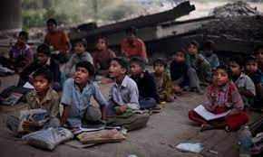
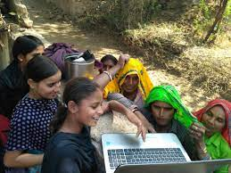
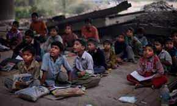
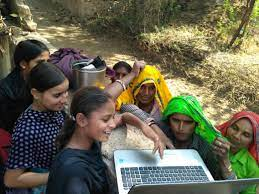

Dear friends,
Together, We Can End Poverty. Join us in our mission to end poverty worldwide. Your donation can make a real difference in the lives of those in need. Together, we can provide food, shelter, education, and hope for a better future. Every contribution, no matter how small, helps us move one step closer to our goal. Donate today and be a part of the change!
Global Poverty Eradication Network
We are dedicated to eliminating poverty by providing assistance through our website to those in need. Here's how we do it:
- Application Process: Individuals complete a form on our website, providing necessary information.
- Verification: We verify their information through various methods, including requesting government-approved income certificates.
- Assessment: Our team of over 1000 volunteers conducts on-site visits to assess living conditions and employment status.
- Tailored Support: Each volunteer caters to the specific needs of the individual.
- Direct Aid: To prevent misuse of donations, we provide direct aid in the form of essential items. In cases where education expenses are involved, our volunteers personally visit schools to pay for expenses.
- Entrepreneurship Support: We offer business startup kits to many individuals to help them become self-sufficient.
 



© 2024 Donation Camp. All rights reserved.